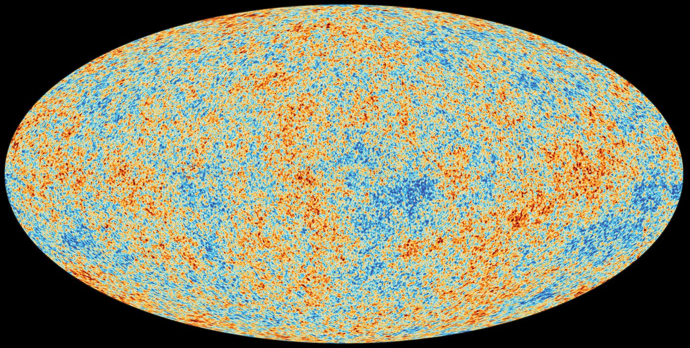

From Sky Map to Power Spectrum
The microwave background is a picture of the sky. The thing cosmologists actually fit is a power spectrum. Getting from one to the other is a specific and rather beautiful procedure, and the last step of it explains why the left-hand end of that power spectrum can never be measured well — no matter how good the telescope.
First, the temperature
Before any of this there was a simpler measurement: point a microwave receiver at the sky and ask what the spectrum is. COBE’s FIRAS instrument answered in 1990, and the answer is the most perfect blackbody ever measured — departures from the Planck curve below about fifty parts per million, at a temperature of 2.72548 ± 0.00057 K. Point it somewhere else and you get the same blackbody, to the same precision, in every direction.
Data: Fixsen et al. 1996, ApJ 473, 576, Table 4, via NASA LAMBDA.
That single fact is the argument that this radiation is primordial. A blackbody spectrum is what thermal equilibrium produces, and nothing in the universe today is capable of making one this good across the whole sky; starlight reprocessed by dust, for instance, is nothing like a blackbody. Equally important, expansion preserves the blackbody form. Stretch every wavelength by the same factor and a Planck curve at one temperature becomes a Planck curve at a lower one, with T scaling as 1/a. So a thermal spectrum today is direct evidence of a thermal past, and the temperature tells you how far back.
The universe became transparent when it had cooled enough for protons and electrons to combine into neutral hydrogen — at a redshift of about 1090, when the temperature was roughly 2970 K, some 0.26 eV. The same photons have been travelling freely ever since, and the universe has expanded by a factor of about 1090 in the meantime, cooling them by exactly that factor to the 2.725 K we measure. The microwave background is the light of the moment the first atoms formed, redshifted by a factor of 1090.
Three things get called “recombination” in casual speech and they are not quite the same event. Hydrogen actually recombines earlier: half the electrons are bound by redshift 1276. Photons stop scattering later, when the free electrons have thinned enough that the optical depth falls to one, and that is the 1090 above — the redshift that sets how much the light we receive has been stretched. Later still, at redshift 1060, the baryons stop being dragged along by the photons, and it is that epoch which fixes the standard ruler used for baryon acoustic oscillations. The ordering matters: recombination is a condition on the gas, decoupling a condition on the photons, and the drag epoch a condition on the baryons.
Nor is the last-scattering surface really a surface. Photons did not all take their final scattering at the same instant — the probability is spread over a range of redshift with a half-maximum width of about 200, so the light arriving now was released anywhere between redshift 980 and 1180, across which the plasma cooled from about 3220 K to 2680 K. It is a shell some tens of millions of light years thick, not a wall, and that thickness is itself one of the things that smooths out the smallest features in the spectrum.
Recombination happens at 0.26 eV rather than at hydrogen’s 13.6 eV binding energy because photons outnumber baryons by about 1.6 billion to one: even far out on the tail of the distribution there are enough energetic photons to keep hydrogen ionized until the temperature has fallen well below the naive threshold.

−300 µK 0 +300 µK — deviations from 2.7255 K
From the Planck Legacy release of July 2018, the mission’s final data release. Credit: ESA/Planck Collaboration (ESA Standard Licence).
The sky you actually measure
Having established what the radiation is, the cosmology is in the departures from uniformity. Point the receiver in different directions and the temperature is almost, but not quite, the same.
Those departures are conventionally sorted by how many times the pattern changes sign as you go round the sky, and the first two terms have names worth being precise about. The monopole is the part of the sky that is the same in every direction — a single number, the average temperature over the whole sphere, with no direction attached to it at all. Subtract it and by construction the sky averages to zero. The dipole is the part that is hotter in one direction and colder in exactly the opposite direction, with a smooth gradient between: one hot pole, one cold pole. It is the simplest pattern that has a direction.
These are not ad-hoc labels. They are the first two terms of the same expansion in spherical harmonics used further down this page — the monopole is ℓ = 0, a constant over the sphere; the dipole is ℓ = 1; the quadrupole, with four alternating lobes, is ℓ = 2. The power spectrum simply continues the same series out to ℓ = 2500 and beyond. Cosmology lives from the quadrupole upward, because the first two terms turn out to be about us rather than about the early universe. The monopole tells us when we are living: its value is fixed by how much the universe has expanded since the first atoms formed, a factor of 1090, and an observer at a different epoch would measure a different number. The dipole tells us how we are moving: the Sun carried around the Galaxy, the Galaxy through the Local Group, and the Local Group towards the mass concentrations beyond it, about 370 km/s in total. That number is not independent of the table above: divide the dipole amplitude by the monopole and multiply by the speed of light — 3.3621 mK / 2.72548 K — and you get 370 km/s (369.82 ± 0.11 km/s from Planck), which is how the velocity is measured in the first place. Moving with respect to what needs care: radiation is made of photons and has no rest frame. What the microwave background does pick out is the one frame in which it looks isotropic — the same temperature in every direction, no dipole. That frame is singled out by the matter and radiation of the universe happening to be at rest in it, not by any preference in the laws of physics, and our 370 km/s is measured against it. On the standard assumption — see the note below — neither the monopole nor the dipole is a property of the early universe, and everything from ℓ = 2 upward is.
That the dipole is entirely our motion is an assumption, not a measurement. With one sky there is no way to separate a Doppler dipole from an intrinsic one: a genuine ℓ = 1 fluctuation in the early universe would look exactly the same. The velocity above is obtained by attributing the whole 3.3621 mK to our motion, which presumes the universe is statistically isotropic — that a primordial dipole should be no bigger than a typical primordial quadrupole, and the quadrupole is some thousand times smaller than what we see.
It is a reasonable assumption and it is also testable, because our motion should tip the counts of distant objects in the same direction: slightly more sources ahead of us than behind. Surveys of radio sources and quasars do find such a dipole, aligned with the CMB one — but with roughly twice the amplitude the CMB velocity predicts, discrepant at around five standard deviations in several analyses. The result is disputed and may yet prove to be a systematic in the source catalogues. If it survives, then either the CMB dipole is not purely kinematic, or the universe is not as isotropic as the whole framework on this page assumes. Take the 370 km/s as the value within that assumption.
| Component | Amplitude | What it is |
|---|---|---|
| Monopole | 2.7255 K | a blackbody: the early universe, cooled by 1090× |
| Dipole | 3.3621 mK | our motion relative to the frame where the CMB is isotropic |
| Anisotropies | ~112 µK | the cosmology |
Five orders of magnitude separate the first from the last. The monopole is the measurement above — the most informative number of the three, and the one that establishes what we are looking at — but it carries no angular information, so it plays no part in a power spectrum. The dipole is not primordial either: it is the Doppler shift from the Solar System’s motion at about 370 km/s toward Leo, an effect of where we happen to be rather than of the early universe. Both are subtracted before the angular analysis begins. What remains is a field of fluctuations of order one part in 105.
What has to come off first
Between us and the last-scattering surface sits our own galaxy, which is bright at microwave frequencies and not remotely uniform: synchrotron emission from cosmic-ray electrons, free-free from ionized gas, thermal emission from dust. These are removed by observing at many frequencies at once and exploiting the fact that they have different spectra while the CMB has a blackbody one. Whatever survives near the galactic plane is simply cut out, and the resulting hole in the sky has consequences of its own — you cannot decompose a sphere into spherical harmonics if you are missing part of it, so the modes get coupled and have to be untangled afterwards.
Decomposing the sphere
Any function on a sphere can be written as a sum of spherical harmonics, the way any function on a line can be written as a sum of sines and cosines:
ΔT(n̂) = ∑ℓm aℓm Yℓm(n̂)
The index ℓ sets the angular scale — roughly 180°/ℓ — and m sets the orientation of the pattern on the sky. For each ℓ there are 2ℓ+1 values of m, running from −ℓ to +ℓ. Below is what a single one looks like: red where the pattern is hot, blue where it is cold, on the same oval all-sky projection used for the real maps.
A single spherical harmonic —
Every one of these patterns has the same characteristic size, set by ℓ alone. Sliding m changes where the pattern’s lobes are aimed, not how big they are: at m = 0 the bands run round in latitude, at m = ℓ they run in longitude like the segments of an orange, and in between they tilt. The sky is a sum of all of them at once, with a coefficient aℓm in front of each, and the whole map is those coefficients.
Here is the part that matters for cosmology, and it is easy to miss. Latitude and longitude with respect to what? Nothing in the universe defines a pole; the one used here is a convention, in practice the plane of our own galaxy. Choose a different pole and every one of these pictures changes — the aℓm at fixed ℓ get mixed among themselves, and a pattern that was banded in latitude becomes something else. So an individual aℓm cannot be a physical quantity: it depends on an arbitrary choice we made.
ℓ is a different matter entirely, and the distinction is the whole point. Rotating the coordinates mixes the aℓm only among themselves at fixed ℓ — it never moves power from one ℓ to another. So ℓ survives any change of pole untouched, and the angular size that goes with it, roughly 180°/ℓ, is a genuine statement about the sky. When the power spectrum peaks at ℓ ≈ 220 that is a real feature at a real angular scale of about 0.8°, the size of the mottling in the map above; every observer, using any pole they like, would find it at 220. One index is physics and the other is bookkeeping.
What does not change under that choice is the sum of |aℓm|² over all m at fixed ℓ. Rotating the coordinates shuffles the terms but preserves the total. That rotationally invariant combination is the only thing a universe with no preferred direction is entitled to predict — and it is exactly the power spectrum defined in the next section. The averaging over m is not a convenience for tidiness; it is the step that throws away our arbitrary pole and keeps the physics.
It has a price, and the rest of this page is about paying it. Averaging over m is averaging over 2ℓ+1 numbers, and at small ℓ there are very few of them.
From aℓm to Cℓ
Cosmology does not predict the individual coefficients. Inflation predicts that they are random — drawn from a Gaussian with zero mean — and predicts only their variance. That variance is the power spectrum:
Cℓ = 〈|aℓm|²〉 = (1 / (2ℓ+1)) ∑m |aℓm|²
So the procedure is: take the cleaned map, project it onto every Yℓm to get the coefficients, square them, and average over the 2ℓ+1 orientations at each ℓ. One number per multipole. That is the entire reduction from a map of a million pixels to a curve.
It is worth being clear about which step is which, because the two are easily run together. Getting the aℓm involves no correlations at all: it is a single linear operation on the map, the same integral you would do to extract a Fourier coefficient, one pixel at a time.
aℓm = ∫ ΔT(n̂) Y*ℓm(n̂) dΩ
The two-point function arrives only at the next step, when those coefficients are squared. And it turns out that squaring-and-averaging is the same operation as measuring how the temperature at one point correlates with the temperature at another a fixed angle away. Write C(θ) for the average of ΔT(n̂1)ΔT(n̂2) over all pairs of directions separated by θ, and the two descriptions are related by a Legendre transform:
C(θ) = (1 / 4π) ∑ℓ (2ℓ+1) Cℓ Pℓ(cos θ)
So the power spectrum and the angular correlation function carry exactly the same information, packaged two ways, and in practice Cℓ can be estimated by either route: project the map onto harmonics and average the squares, or bin every pair of pixels by their separation and transform. Masked skies make the first route awkward, which is why the second is not merely of academic interest.
The same measurement, done by counting pairs
A deliberately coarse sky: only multipoles up to ℓ = 48 are included, so the smallest features are a few degrees across and a few thousand points can resolve them. Every pair of the chosen directions is binned by its separation and the product of the two temperatures averaged — that average, plotted against separation, is C(θ). Nothing about spherical harmonics is used in the estimate itself.
The points will not sit exactly on the curve, and that is not a defect of the method. One sky is one realisation, and the same cosmic variance that afflicts the power spectrum afflicts this: the scatter is largest at wide separations, where only the few lowest multipoles contribute. Averaging two dozen independent skies brings the estimate onto the curve to within a couple of percent of C(0) — which is the check that the estimator is unbiased, and also the thing no observer can actually do.
One number falls out of that relation immediately. At zero separation it is a point correlated with itself, so C(0) is just the variance of the map: summing this spectrum gives C(0) = 12,660 µK², or 112 µK rms — the number in the table at the top of this page. By 30° the correlation has fallen to under 2% of that, and beyond 60° it goes slightly negative: on the largest scales a hot patch is, very weakly, more likely to face a cold one.
And it is also where the fundamental limit comes in. To estimate a variance you need samples, and at each ℓ the universe gives you exactly 2ℓ+1 of them. At ℓ = 2 there are five. This explains the fundamental limit of measuring low ℓ in the power spectrum.
Cosmic variance
Below, the scarlet curve is a theoretical spectrum: the true Cℓ of the model. The grey points are what you would measure from one universe drawn from it — aℓm sampled at random, squared, averaged over m. Draw a new sky and watch which end of the power spectrum moves.
One universe at a time
The high-ℓ end barely moves: there are thousands of modes to average and the estimate is tight. The low-ℓ end lurches about by tens of percent every time, and no improvement in the instrument can fix it. You would need more sky, and there is only one.
The precision available at each multipole is just the statistics of averaging 2ℓ+1 squared Gaussians:
ΔCℓ / Cℓ = √(2 / (2ℓ+1))
| Multipole | Modes | Best possible | Planck’s lower bar |
|---|---|---|---|
| ℓ = 2 | 5 | 63% | 59% |
| ℓ = 3 | 7 | 53% | 48% |
| ℓ = 5 | 11 | 43% | 38% |
| ℓ = 9 | 19 | 32% | 31% |
| ℓ = 100 | 201 | 10.0% | — |
| ℓ = 1000 | 2001 | 3.2% | — |
The last two columns are not fitted to each other. One is a counting argument about how many independent modes exist on a sphere; the other is what Planck actually reports. At the largest scales Planck is already doing as well as any experiment ever will.
It also explains a detail on the power spectrum page that otherwise looks like a mistake: the error bars at low ℓ are asymmetric, much longer upward than downward. Averaging five squared Gaussians gives a badly skewed distribution — it cannot go below zero but has a long tail upward — so the uncertainty is lopsided. With two thousand modes the same distribution is indistinguishable from a Gaussian, and the bars become symmetric.
Why the power spectrum is plotted as ℓ(ℓ+1)Cℓ/2π
The quantity that appears on every published CMB plot is not Cℓ but Dℓ = ℓ(ℓ+1)Cℓ/2π. The reason is that the contribution to the total temperature variance from a logarithmic interval in ℓ is approximately ℓ(ℓ+1)Cℓ/2π, so a spectrum with equal power on all scales — the scale-invariant case — comes out flat. It puts the eye in the right place: departures from flat are physics.
Adding up that variance across this spectrum gives about 112 µK, and the band from ℓ = 100 to 300 alone supplies nearly 40% of it. That is the degree-wide hot and cold blotches the sky is famous for — the first acoustic peak, seen directly.
So what does the peak at ℓ = 220 mean?
In plain terms: it is the size of the blotches in the picture. Nothing more exotic than that. The map near the top of this page is mottled on a scale of very roughly one degree, and a pattern one degree across is what ℓ ≈ 180/1 ≈ 200 means. The peak in the power spectrum is the statement, made quantitatively, that the sky has more contrast at that angular size than at any other.
Read the map that way and the whole spectrum becomes legible. The broad swathes of colour spanning tens of degrees are the low multipoles, the left-hand end of the power spectrum. The fine speckle is high ℓ, the right-hand end. And the dominant texture, the scale your eye settles on, is the first peak at ℓ ≈ 220 — 49 arcminutes, about the width of your little fingernail at arm’s length, or one and a half full moons.
Where does that particular size come from? Before the universe went transparent, the photons and baryons behaved as a single fluid, and pressure waves ran through it at about 58% of the speed of light. The farthest such a wave could travel between the beginning and last scattering is the sound horizon: 144 Mpc in today’s units. The mode whose wave had just completed one compression when the plasma froze out ended up with the largest temperature contrast — and that is the first peak. Every peak after it is a mode that got through two compressions, three, and so on.
So a fixed physical length is sitting on the last-scattering surface, and we are looking at it from 13,870 Mpc away. That is a triangle: 144 Mpc seen from 13,870 Mpc subtends 0.6°. The peak lands near ℓ = 220 rather than exactly 180/0.6 = 300 because the oscillations are being driven by decaying gravitational potentials, which shifts the peaks somewhat; the clean scale π/θ∗ = 302 is the acoustic scale, and the first peak sits at about 0.73 of it.
And this is where the cosmological parameters come in. The numerator of that triangle, the sound horizon, is fixed by conditions before recombination — how much matter and how many baryons there were, which set both the sound speed and how long the plasma phase lasted. The denominator, the distance to the last-scattering surface, is fixed by everything that happened since — the expansion history, and so H₀ and the dark energy. The position of the peak measures the ratio of the two. That ratio is θ∗, and it is why moving any of the six parameters on the power spectrum page slides the peaks left or right. The blotch size in a photograph of the infant universe is a measurement of what the universe is made of.
What is needed for the real measurement
Everything above is true and none of it is sufficient. What a real experiment measures is not Cℓ but something closer to (Cℓ + Nℓ) Bℓ², smeared across neighbouring multipoles by the mask, with foreground residuals on top. Undoing that is most of the work.
The beam
No telescope has infinite resolution, and a finite beam suppresses small-scale power severely. A Gaussian beam multiplies the spectrum by exp(−ℓ(ℓ+1)σ²); for Planck’s 7′ channel that is a factor of 0.44 at ℓ = 1000 and about 1/160 at ℓ = 2500. All of that has to be divided back out, which means the beam must be known to better than the precision you want on the answer — measured in flight, from planets. The pixels themselves add a second, smaller window function of the same kind.
Noise, and a trick for avoiding it
Detector noise adds power rather than removing it, so a naive spectrum is biased upward everywhere, most damagingly at high ℓ where the signal has been beaten down by the beam. Subtracting an estimate of the noise works, but any error in that estimate goes straight into the answer. The standard escape is to cross-correlate maps made from independent detectors, or from different halves of the mission: the sky is common to both and survives, the noise is not and averages away. It removes the bias without having to know the noise level at all.
Foregrounds
Our galaxy is far brighter than the CMB over much of the sky. It is separated out by observing at many frequencies — Planck used nine, from 30 to 857 GHz — and exploiting the fact that synchrotron, free-free and dust each have their own spectrum while the CMB is a blackbody. What survives that is not zero, so the likelihood carries extra free parameters for the leftovers: residual dust, unresolved point sources, the cosmic infrared background, the thermal and kinetic Sunyaev–Zel’dovich effects. Planck’s high-ℓ temperature likelihood fits roughly twenty such nuisance parameters alongside the six that matter.
The mask
Whatever cannot be cleaned is cut out, and a cut sky is no longer a sphere. Spherical harmonics are only orthogonal over the complete sphere, so on a masked map the multipoles leak into one another and what comes out is a smeared version of the spectrum. The coupling can be computed and inverted, but two costs remain: the estimate at one ℓ is correlated with its neighbours, and you have fewer modes, so cosmic variance grows as 1/√fsky. Keeping two-thirds of the sky inflates every error bar on this page by about 23%.
Calibration, and the dipole again
An overall scale error would move the whole spectrum up or down and mimic As. The calibrator turns out to be the dipole: not the 3.36 mK one from our motion through the universe, but the small annual modulation from the Earth’s own orbit, whose amplitude is known to exquisite precision from celestial mechanics. Planck calibrates against it to better than a tenth of a percent.
Lensing
The light has crossed 13 billion light years of intervening structure, and its path has been bent. Gravitational lensing shifts features by a few arcminutes, which slightly smooths the peaks and troughs. It must be modelled — and, as it happens, it is also a signal in its own right, carrying information about the matter the light passed through.
And the statistics at the ends
At high ℓ there are enough modes that the estimated spectrum is Gaussian and a covariance matrix suffices. At low ℓ it is not, for the reason this page has been making all along: with five modes the distribution of an estimated variance is badly skewed, so Planck uses an exact pixel-based likelihood below ℓ ≈ 30 and the Gaussian approximation above it. The join between the two is visible in every Planck plot if you know to look for it.
The spectrum plotted here is ΛCDM at the Planck 2018 parameters, from the same emulator used on the CMB power spectrum page, so the two agree by construction. The comparison column is the Planck 2018 binned likelihood from the ESA Planck Legacy Archive. Monopole from Fixsen (2009); dipole amplitude from Planck 2018 results I.
Further afield: the CMB power spectrum with all six parameters on sliders; ΛCDM and the six parameters; the cosmology calculator.